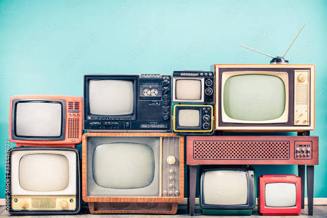

TELEVISION

Television (TV) is an electronic device used to receive and display moving images and sound, allowing people to watch programs, news, movies, sports, documentaries, and other forms of entertainment. Television receives signals through different sources such as cable, satellite, digital broadcasting, or the internet and converts these signals into pictures and sound.
A television normally consists of a screen, speakers, remote control, and electronic circuits that process audio and video signals. Modern televisions, especially Smart TVs, can also connect to the internet and provide access to streaming services, websites, online videos, and various applications.
Television is an important source of information, education, communication, and entertainment. It helps people stay informed about current events, learn about different subjects, and enjoy programs from around the world. Today, television has developed from traditional large-screen sets into advanced, high-definition and smart devices with features such as 4K/8K display, internet connectivity, voice control, and streaming applications Read more or Explore